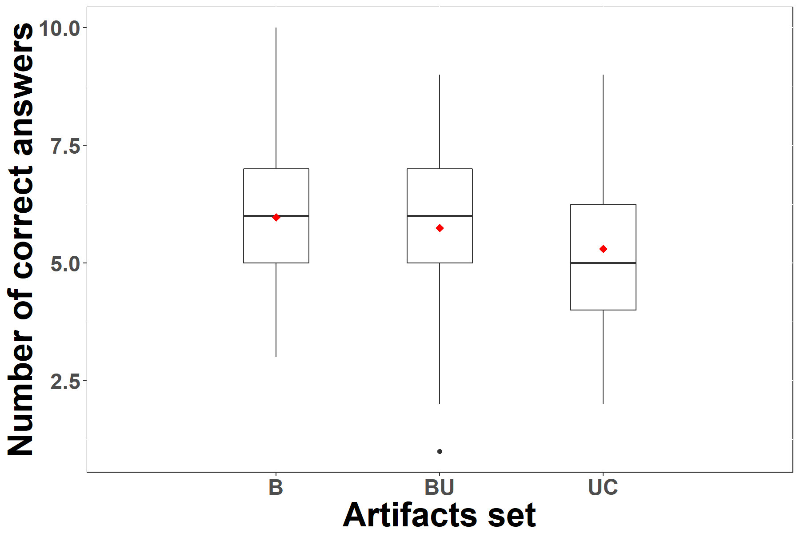

Olga-Lucero Vega-Márquez12, Jaime Chavarriaga1, Mario Linares-Vásquez1,
Abstract
The Business Process Model and Notation (BPMN) has become the defacto standard for process modeling. Currently, BPMN models can be (i) analyzed or simulated using specialized tools, (ii) executed using Business Process Management Systems (BPMS), or (iii) used for requirements’ elicitation. Although there are many studies comparing BPMN to other modeling techniques for analyzing and executing processes, there are few showing the suitability of BPMN models as a source for requirements’ comprehension in projects where process-aware software is built without using BPMSs. This chapter presents a study aimed at comparing the comprehension of software requirements regarding a business process when they are specified using BPMN or using traditional techniques such as use cases. In our study, we analyzed responses of 120 undergraduate and graduate students regarding the requirements’ comprehension achieved when using only BPMN models, use cases, or both. The results do not show significant impact of the artifacts on the comprehension level. However, when the understanding of the requirement involves sequence of activities, using the BPMN shows better results.
Case Studies
We used two case studies in our experiment, a Loan Application in the MSG Foundation, and a Point of Sale. For each one, following you find two pdf files with the case study description and the use case specification. Next you find the images of the use case diagram and the BPMN model. At the end you find a link for downloading these files and their sources (.docx for the documents, .mdj for UML diagram, and .bpm for the BPMN model).
MSG Foundation loan application
This case study is about applying to the MSG Foundation for a loan to buy a house.Description (in Spanish)
La Fundación MSG, creada con recursos por $2.3 billones de dólares donados por la señora Martha Stockton Greengage, apoya a matrimonios jóvenes para que adquieran vivienda propia, a través de créditos hipotecarios por el 100% del valor de la casa, a bajo costo, sin cuota inicial, con cuotas fijas y con subsidio para las cuotas que la pareja no alcance a cubrir. La Fundación otorga este crédito si se cumplen las siguientes condiciones:
- Es un matrimonio entre 1 y 10 años.
- La pareja demuestra que ambos están empleados de tiempo completo desde hace por lo menos un año.
- El precio de la vivienda es inferior al precio promedio de los últimos 12 meses de las casas en el área.
- El valor de la cuota excede el 28% de los ingresos de la pareja (La cuota se calcula con capital de 90% del valor de la casa, tasa fija y plazo de 30 años).
- Los ahorros de la pareja son inferiores al 10% del valor de la casa.
- La Fundación tiene fondos para comprar la casa.
Una solicitud de crédito debe estar acompañada de los soportes respectivos. Si hay inconsistencias o errores, se informa a la pareja para que subsane la situación, en un plazo no mayor a 15 días calendario. Cumplido este plazo sin recibir los ajustes, la solicitud es eliminada. Si los soportes son válidos, el analista de crédito envía al comité de crédito y posteriormente registra el resultado de la evaluación, el cual es informado a la pareja. Si el crédito es aprobado, también se informan las instrucciones de legalización y posterior desembolso al vendedor del inmueble. El valor aprobado se descuenta del valor disponible en la Fundación para compra de vivienda
La Fundación determina si tiene fondos para aprobar un crédito de la siguiente forma: Divide en 12 los ingresos estimados de sus inversiones (los recursos no utilizados para financiar vivienda se invierten), le resta el estimado anual de gastos de sostenimiento dividido en 12, le suma el estimado de pagos por cuotas que recibirá este mes, y le resta el estimado de los subsidios que otorgará este mes. El saldo es distribuido entre las solicitudes de crédito que cumplen los demás requisitos. Con el dinero no utilizado en compra de viviendas se hacen inversiones redimibles en un mes.
Si una solicitud es aprobada, se establece la cuota fija compuesta de abono a capital y a intereses. Mensualmente, al momento del pago, la pareja presenta sus soportes de ingresos del mes anterior y el máximo pago que realiza es del 28% de éstos. Si la cuota es mayor, la Fundación asume el resto como subsidio. De esta manera, el valor que paga la pareja mensualmente puede variar, dependiendo de sus ingresos. Si la pareja paga menos de lo informado, el faltante se constituye en mora y un área especializada hace el cobro. Este valor también se de los ingresos a la Fundación por concepto de pago de cuotas.
La junta directiva de la Fundación ha contratado una firma para el desarrollo del software que soporte los procesos descritos. Una de las principales necesidades de la fundación es contar con un cálculo automático de cuántos fondos hay disponibles cada mes para la financiación de viviendas.
BPMN model

- Image in MSG-bpmnModel.png
- Bizagi model (.bpm) in MSG-BPMN.bpm
UML use case diagram

- Image in MSG-UCS-umlDiagram.png
- StartUML diagram (.mdj) in MSG-UCS-umlDiagram.mdj
Use case specification
It can be downloaded as- Pdf in MSG-UseCaseSpecification.pdf
- Doc in MSG-UCS-Template.docx
Questionnaire
You can download a document in MSG-Questionnaire.docx
Point of Sale
This case study is about paying for a purchase at a supermarket point of sale, where products are registered with their prices and quantities, payment is received, and products are delivered to the customer
Description (in Spanish)
Un sistema de Punto de Venta - PdV generalmente se usa para administrar las ventas en supermercados. Incluye componentes de hardware como una computadora, un escáner de código de barras, una impresora y un software para realizar su función más básica que es registrar las ventas y apoyar la administración de la tienda.
Las ventas Un cliente llega a una caja con bienes para comprar, el cajero iniciará una nueva transacción de venta. Cuando el código barras de un bien es leído por el sistema PdV, recuperará el nombre y el precio de este bien del sistema de Catálogo e interactuará con el sistema de inventario para deducir el monto de stock de este bien. Cuando finaliza la transacción de venta, el cliente puede pagar en efectivo o con tarjeta de crédito. Después de que el pago sea confirmado, se imprimirá un recibo. Para la promoción de la tienda, ésta con frecuencia emite cupones de regalo. El cliente puede usar los cupones para obtener un mejor precio al comprar bienes. Otra función de un sistema PdV es manejar devoluciones.
Los pagos y devoluciones Hay dos modos de manejar los pagos: en efectivo o con tarjeta de crédito. Si es con efectivo, el cajero ingresa el monto recibido y el sistema presenta el valor a devolver y abre el cajón de efectivo. El cajero deposita dinero en efectivo y entrega las vueltas al cliente. Enseguida, el sistema registra el pago en efectivo. Por otro lado, si el cliente decide pagar con tarjeta de crédito, el cajero le pide al cliente que ingrese su información. El cliente ingresa la información de su cuenta de crédito y luego el sistema envía la solicitud de autorización de pago a un sistema externo de servicio de autorización de pagos y solicita la aprobación del pago. A continuación, el sistema registra el pago con tarjeta de crédito, incluyendo la aprobación del pago. El cajero solicita al cliente su firma de pago en el comprobante para completar la venta.
Cupones de regalo Usar cupones de regalo es otra funcionalidad disponible con el sistema PdV. Si el cliente tiene un cupón de regalo, entonces es elegible para un descuento (por ejemplo, de empleado, cliente preferido, titular del cupón). El cajero envía una solicitud de descuento e ingresa la identificación del cliente, luego el sistema presenta un total de descuento basado en las reglas de descuento.
Opción de ayuda Si el cajero necesita ayuda mientras ingresa la información o para el procesamiento de una venta, él puede usar el sistema para obtener ayuda. Esto incluye toda la información y las pautas para procesar la venta.
BPMN model
This BPMN model can be downloaded as{kind=link}
- Image in PointOfSale-bpmnModel.png
- Bizagi model (.bpm) in PS-BPMN.bpm
UML use case diagram

- Image in PS-UCS-umlDiagram.png
- StartUML diagram (.mdj) in MSG-UCS-umlDiagram.mdj
{kind=link}
Use case specification
It can be downloaded as- Pdf in PS-UseCaseSpecification.pdf
- Doc in PS-UCS-Template.docx
Questionnaire
You can download a document in PS-Questionnaire.docx
PS - All files (source included)
- PointOfSale-bpmnModel
- PointOfSale-Questionnaire
- PointOfSale-StudyCase
- PointOfSale-UseCaseSpecification
- PS-BPMN
- PS-CdE
- PS-UCS-Diagrama
- PS-UCS-Formato
Raw data
|

|
|
|
|
|
|
|
|
|
|
|
|
|
|
|
- Tables-for-chapter
- Tables-for-chapter
- ea-freq-msg.png
- ea-freq-msg-ps
- ea-freq-ps
- _RData
- _Rhistory
- CR-BP-S-SW-MannW-numCA
- nCAsc4y5-S-SW-MannW
- numCAsc4y5
- rq1-m1-both
- rq1-m1-both
- rq1-m1-both
- rq1-m1-msg
- rq1-m1-msg
- rq1-m1-msg
- rq1-m1-ps
- rq1-m1-ps
- rq1-m1-ps
- _RData
- _Rhistory
- CR-bp-S-SW-AnoVA-MannW-Subj
- CR-Subjects
- datosMSGB-plot
- nSubj-S-KS-AoV
- nSubj-S-KS-SW-AoV-MannW
- README
- rq1-m2-both
- rq1-m2-both
- rq1-m2-both
- rq1-m2-msg
- rq1-m2-msg
- rq1-m2-msg
- rq1-m2-ps
- rq1-m2-ps
- rq1-m2-ps
- _RData
- _Rhistory
- AvgScore-S-KS-SW-AoV-MannW
- CR-BP-S-AoV-KS-Score
- CR-Score
- rq1-m3-both
- rq1-m3-both
- rq1-m3-both
- rq1-m3-msg-con-Xlim
- rq1-m3-msg-delgado
- rq1-m3-msg-delgado-horizontal
- rq1-m1-msg
- rq1-m1-msg
- rq1-m1-msg
- rq1-m3-msg-horizontal
- rq1-m3-msg-Vertical-labelToo
- rq1-m1-ps
- rq1-m1-ps
- rq1-m1-ps
{kind=link}
{kind=link}
{kind=link}
{kind=link}
{kind=link}
{kind=link}
{kind=link}
{kind=link}
{kind=link}
{kind=link}
{kind=link}